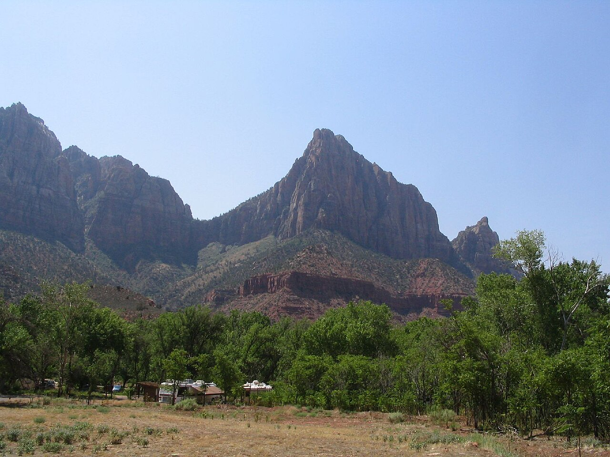

Zion National Park from Las Vegas · 5-day family itinerary
Four November nights in Springdale, with the car parked and the free shuttle doing the canyon. Short trails for a ten-year-old and a seven-year-old, the Riverside Walk to the end of the pavement rather than into the river, and a Kolob Canyons stop on the drive back to Las Vegas.

Photo: Ken Lund, The Watchman, Zion National Park, Utah, CC BY-SA 2.0, via Wikimedia Commons.
.jpg){kind=link}
Checked before you commit
This illustrative route drives from Las Vegas to Springdale, stays four nights there and uses the free Zion Canyon shuttle for the canyon days. The National Park Service’s Zion pages on the shuttle, conditions, fees, directions, lodging, hours, the Narrows, trails, cyanobacteria, large vehicles and the seasons, and the USGS gauge page for the North Fork Virgin River, were checked on 27 October 2026. Nothing was booked.
Day 1 drives in from Las Vegas and stays near the Visitor Center. Days 2 and 3 use the shuttle and the Visitor Center trails, with no driving. Day 4 is the one drive inside the park, east through the tunnel. Day 5 picks up Kolob Canyons on Interstate 15 on the way back.
Walks of 15 minutes to 2 hours for a ten-year-old and a seven-year-old, mostly short and several paved, from one base, so nobody repacks. Each day has a morning and an afternoon slot. The longest walk, the Watchman, has a paved swap.
Rooms, restaurant hours, shuttle times for your dates and road status were not checked. US$ figures are the park’s published fees on 27 October 2026 and are not converted. A booking-hub link is intent only. It doesn’t hold a room, a seat or a pass.
Planning boundary: dates are illustrative; the worked example runs Monday 9 to Friday 13 November 2026. The park says its shuttle schedule is subject to change, and that from 29 November to 25 December there is no shuttle service.
We don’t plan the Narrows river hike for this family in November: the water is cold, and the park says neoprene may be needed in late fall. Alfred doesn’t check river flow, flash flood warnings, road status or shuttle times. Book opens a partner checkout; it doesn’t prove a booking.
Route and family-coordination brief
Party: two adults, one ten-year-old and one seven-year-old, Australian residents. Base: four nights in Springdale. Pace: moderate, a morning and an afternoon slot. Budget input: Mid Range. Published fees appear only where an official page states them; nothing is totalled as a family quote.
Getting there: a hire car from Las Vegas, 170 miles (274 km) by the park’s figure. St George Regional Airport (SGU), 49 miles away, is the nearest airport the park lists. In the canyon, the shuttle is free and needs no ticket or reservation, and the park says its car parks often fill by early or mid-morning from February to late November.
Entry: the park lists US$35 per private vehicle, valid seven days, plus US$100 per non-US resident aged 16 and over. Two Australian adults in one car pay US$235. Card is preferred and cash is accepted. Keep the pass with you for re-entry.
Trails left out: Angels Landing needs a permit from a lottery, and its drop-offs aren’t for this age group. The park lists Hidden Canyon as closed and Observation Point as unreachable from Zion Canyon.
Day 1 — Las Vegas to Springdale, the park pass, a paved walk by the river
Pick up the hire car at Harry Reid International Airport (LAS). The park lists it as 170 miles (274 km) from Zion. Check in to a Springdale base; we didn’t check rooms or rates. Zion Lodge is the only lodging inside the park and is open year-round, but this plan keeps the family in town, where the Springdale Line shuttle stops.
Drive in through the South Entrance and buy the park pass. For two Australian adults, the published fees are US$35 for the car, valid seven days, plus US$100 each as non-US residents aged 16 and over. Children under 16 don’t pay the nonresident fee. The park prefers card and also accepts cash. Keep the pass: you must show it to re-enter, whether you drive or walk.
If there is light left, walk part of the Pa’rus Trail from the Zion Canyon Visitor Center. It is paved, 1.6 miles (2.5 km) one way, and the only trail in the park open to bikes and pets, so stay to the side. Turn back whenever the children are ready; the walk doesn’t need to reach the end.
Fallback: if the Visitor Center car park is full, park in Springdale, where parking is paid, and ride the free Springdale Line to the pedestrian entrance at Zion Canyon Village. In this season its last bus leaves Zion Canyon Village at 6 pm.
Live-check: the park’s shuttle page for the season’s times; your room booking; the fee page before you pay.
Day 2 — Early shuttle to the Temple of Sinawava, the Riverside Walk, the Grotto and Lower Emerald Pool
Before breakfast, read the Virgin River flow on the USGS gauge for the North Fork near Springdale, and the National Weather Service flash flood potential. The park closes the Narrows above 150 cubic feet per second (CFS), and under a Flash Flood Warning until at least two hours after it is lifted. Today stays on the paved path either way, but the numbers set the rule for the day.
Board the Zion Canyon Line at the Visitor Center (Stop 1). From 25 October to 28 November, the park lists the first bus at 7 am. Buses run about every 5 to 10 minutes and take about 45 minutes to reach the Temple of Sinawava (Stop 9). Private cars can’t drive the Scenic Drive in shuttle season, even before the first bus. Only capped water is allowed on board, and no eating.
Walk the Riverside Walk: 1 mile (1.6 km) one way, paved, with water and restrooms at the trailhead. The canyon walls rise about 1,000 feet (305 m) above the river. At the end of the pavement, the river becomes the trail and the Narrows begins. We turn around there. In autumn the park gives average water temperatures of 41° to 53°F (5° to 12°C) and says neoprene may be necessary in late fall.
Keep children out of the water. The park warns of toxic cyanobacteria in the Virgin River, says young children and dogs are most at risk, and asks visitors not to submerge their heads or drink river water.
Ride down-canyon to The Grotto (Stop 6) and walk the Grotto Trail to Zion Lodge (Stop 5): 0.5 miles (0.8 km), 15 to 45 minutes, with restrooms at both ends. The Red Rock Grill at the lodge is listed as open year-round; we didn’t check hours.
From the lodge, cross to the Lower Emerald Pool Trail: 0.6 miles (1 km) one way, 1 to 2 hours, and no swimming. The park says it may be icy in winter and asks visitors to avoid cliff edges. Then head back to Stop 1.
In this season the last bus leaves the Temple of Sinawava at 6:15 pm. The park says not to wait for it: if it is full or you miss it, you may have to walk nine miles back.
Fallback: if the Riverside Walk is closed for ice or the river is up, spend the morning at Zion Lodge and the Grotto instead, and keep the river for a later day.
Live-check: the USGS gauge and NWS flash flood potential at breakfast; the park’s conditions page; shuttle times.
Day 3 — The Watchman Trail, the Human History Museum
Start the Watchman Trail from the Visitor Center: 3.3 miles (5.3 km) return, about 2 hours, and 479 feet (146 m) of climb. The park describes it as unpaved, sandy, rocky and uneven, with several moderate drop-offs, ending at a viewpoint over lower Zion Canyon and Springdale. Restrooms and water-bottle filling are at the Visitor Center. This is the longest walk in the plan; hold hands near the edges.
Dress in layers. The park says daily highs and lows can differ by 30°F (about 17°C) in autumn, and that fall colours reach Zion Canyon at the end of October and in early November.
After lunch, take the shuttle one stop to the Zion Human History Museum (Stop 2). The park lists it as open 10 am to 5 pm and says it closes at the end of November, after Thanksgiving. You can’t board an up-canyon bus at Stop 2, so ride back down-canyon to the Visitor Center.
Fallback: if the trail is wet or the children are tired from Day 2, swap the Watchman for the flat, paved Pa’rus Trail, or ask Hey Alfred to swap Day 3 and Day 4.
Live-check: Visitor Center and museum hours; trail notes on the conditions page.
Day 4 — Through the tunnel to Canyon Overlook, a slow afternoon
Drive the Zion–Mount Carmel Highway (State Route 9) east, which stays open to cars in shuttle season, through the Zion–Mount Carmel Tunnel to the Canyon Overlook Trailhead. A normal hire car is well inside the park’s large-vehicle limits; those limits, such as 11 feet 4 inches (3.45 m) of height including roof attachments, apply to motorhomes and other big vehicles.
The park says parking at the trailhead is extremely limited, so go early and be ready to try more than once. There are pit toilets in the car park. The trail is 0.5 miles (0.8 km) one way and 1 to 2 hours, with about 154 feet (47 m) of climb and short sections as steep as 50%. It ends at a fenced cliff edge facing Zion Canyon. Keep children close on the way.
Drive back to Springdale for lunch and keep the afternoon slow: a picnic, the Pa’rus Trail, or the museum if you missed it.
Fallback: if you can’t park after a few tries, drive on and turn around, then spend the morning on the Pa’rus Trail. Don’t park on the highway shoulder; we found no park page allowing it.
Live-check: road status for State Route 9 east on the park’s conditions page; the UDOT road line, 866-511-8824.
Day 5 — Kolob Canyons and the drive back to Las Vegas
Pack the car and drive to Kolob Canyons, at Exit 40 on Interstate 15. The park puts it 40 miles (64 km) from Zion Canyon. The Kolob Canyons Visitor Center is listed as open 8 am to noon and 1 pm to 5 pm. Your park pass covers it.
Drive the Kolob Canyons Road to its end and walk the Timber Creek Overlook Trail: 0.6 miles (1 km) one way and 30 to 60 minutes, with restrooms at the trailhead and water at the visitor centre. Then rejoin Interstate 15 south for Las Vegas.
Fallback: the park says the Kolob Canyons Road often closes in winter. If it is closed, or the flight home is early, drive straight back from Springdale.
Live-check: Kolob Canyons Road status on the conditions page; Kolob Canyons Visitor Center hours; your flight time.
Planning notes
Dates are illustrative. At decision time, recheck the park’s shuttle and conditions pages, the USGS gauge and flash flood potential, the fee page, Kolob Canyons Road, and your room. A travelling profile is required, and the adults, children and ages Alfred plans for come from the travellers on that profile.
On web Lets Go, Holiday takes origin, destination, dates, a budget step and a day pace, then Plan my trip queues the itinerary. Moderate day pace fills a morning and an afternoon slot, with lunch and dinner. The Estimated costs bar, when it appears, is a rounded median of flight-and-hotel packages, not a quote.
While the trip is still Planning, you can keep or change the hotel and then the flights Alfred picked. Holiday takes one destination. We did not test whether city search offers Springdale or Zion National Park.
Once the trip is ACTIVE, you can edit an item’s title, times and notes, so “Riverside Walk; turn at the end of the pavement; check the gauge and flash flood potential at breakfast” can sit on the card. In Hey Alfred you can ask to swap two full days, and you confirm before it is applied. Book opens a partner checkout. It doesn’t check river flow or shuttle times.
Plan a trip
Start with your people, dates and pace, then review the editable plan before booking.
Plan a trip